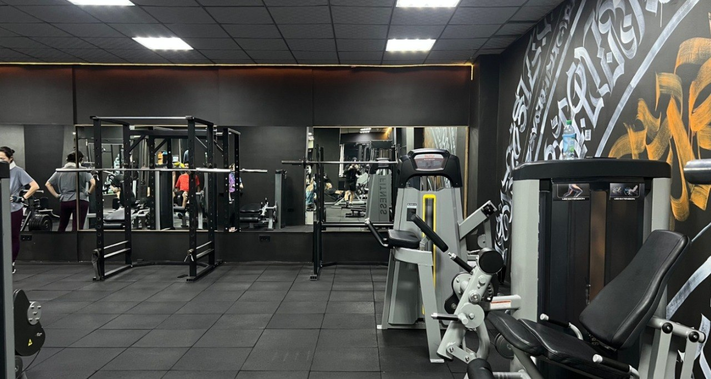
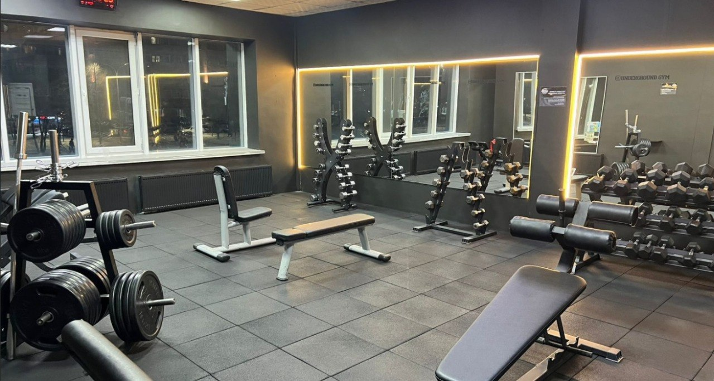
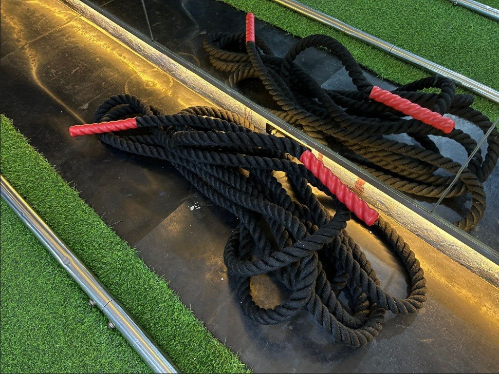

Heavy Lifting & Power Racks
We feature competition-grade steel power cages equipped with heavy safety pins, pull-up bars, and anchored platform bases to ensure maximum stability during heavy squats and bench presses.

Iron Dungeon Gym is equipped with professional, heavy-duty gear built to withstand extreme loads. Our facility is partitioned into specialized zones designed for powerlifting, bodybuilding, and functional conditioning.
We feature competition-grade steel power cages equipped with heavy safety pins, pull-up bars, and anchored platform bases to ensure maximum stability during heavy squats and bench presses.

Our inventory includes an extensive selection of cast iron and calibrated steel plates, rubber-coated bumper plates, and a complete dumbbell rack ranging from 5 kg to 60 kg.

A comparative analysis of machine and free-weight density across our facility compared to standard commercial gym chains:
To supplement compound movements, the facility provides various specialized attachment tools and functional fitness hardware.

Choose your access tier and join the underground training community. Review our official pricing matrix below.
| Plan Type | Monthly | Quarterly (3 Months) | Annual (12 Months) | What's Included |
|---|---|---|---|---|
| Silver Card | 7 490 ₸ | 22 470 ₸ | 89 880 ₸ | Access to 7 selected branches of the chain (unlimited self-guided workouts). |
| Gold Card | 10 990 ₸ | 32 970 ₸ | 131 880 ₸ | Unlimited access to all locations in the chain (11–12 gyms), independent visits, membership freezes, and guest visits. |
| Platinum Card | 20 833 ₸ | 62 499 ₸ | 249 996 ₸ | The premium membership plan, which includes full, unlimited access to all locations, in-studio classes with a trainer (group or one-on-one sessions as scheduled), group programs (yoga, stretching, fitness mix), and access to the spa and saunas. |